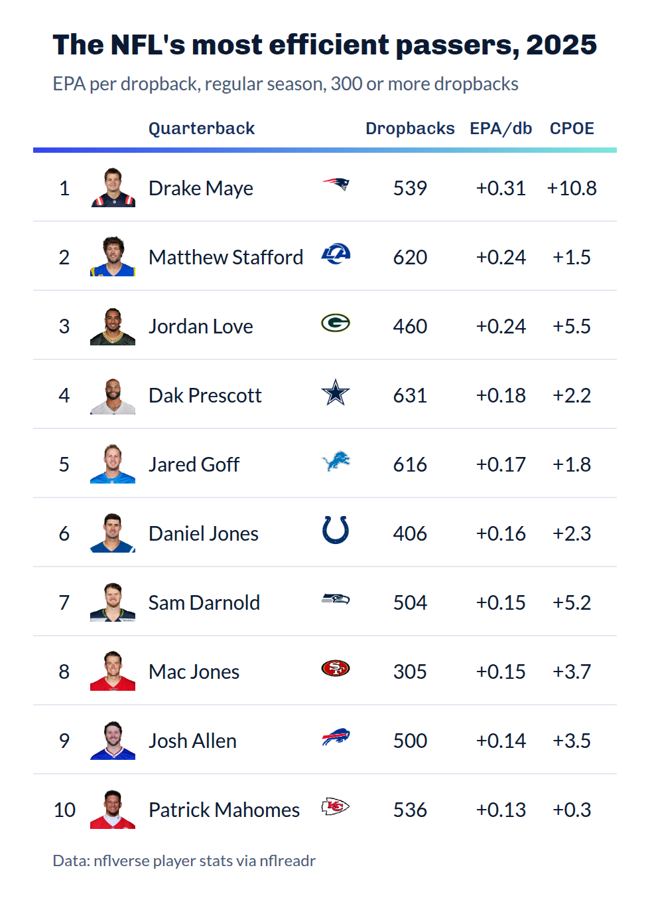
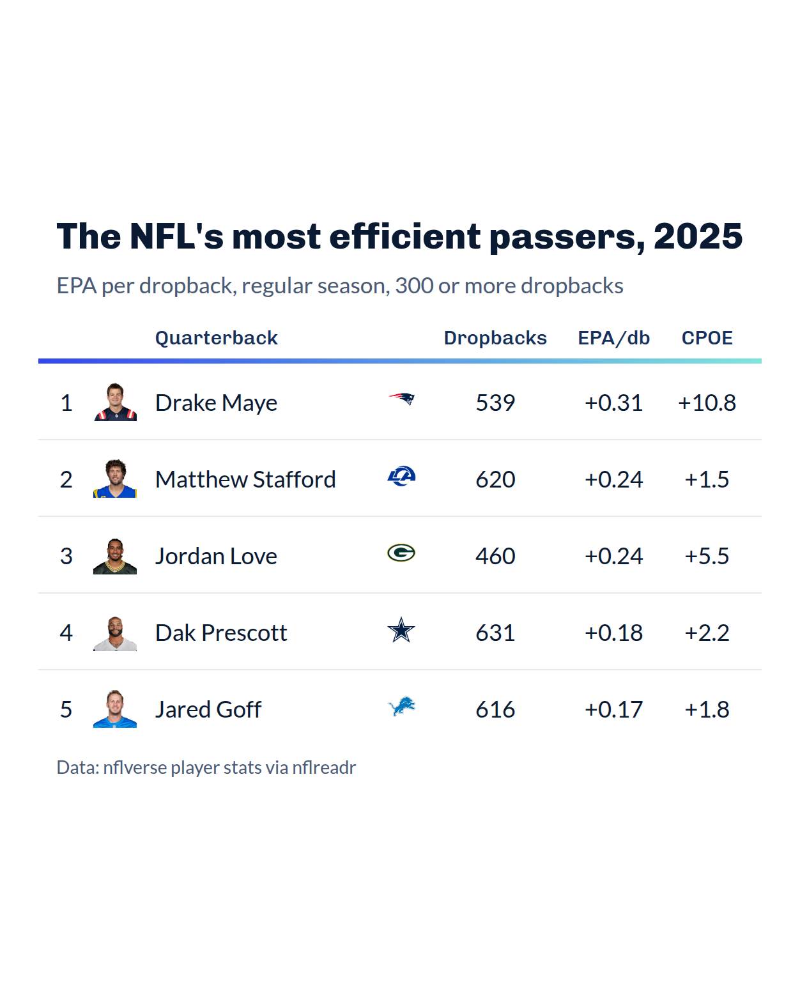
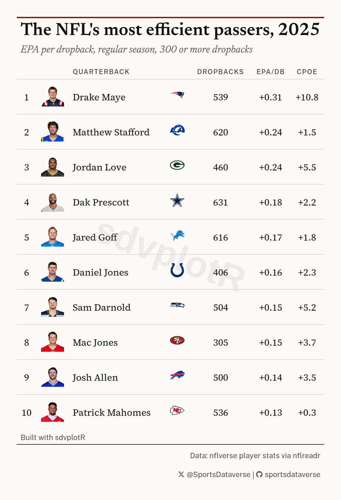
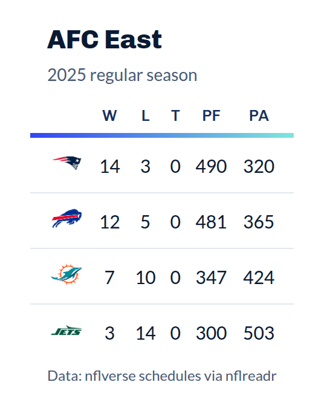
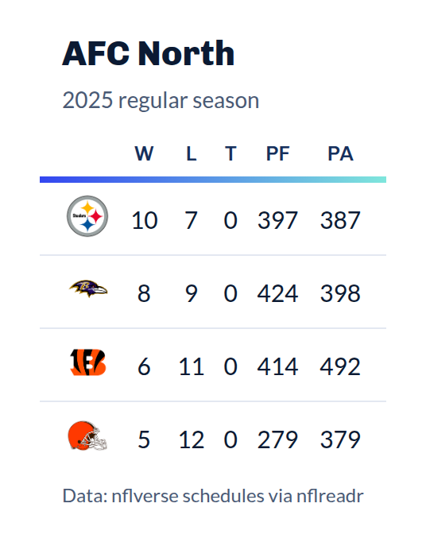
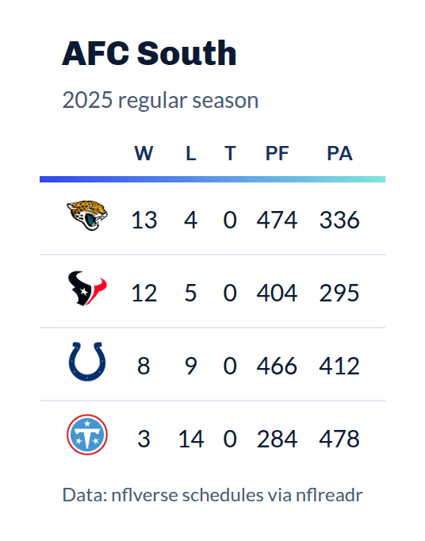
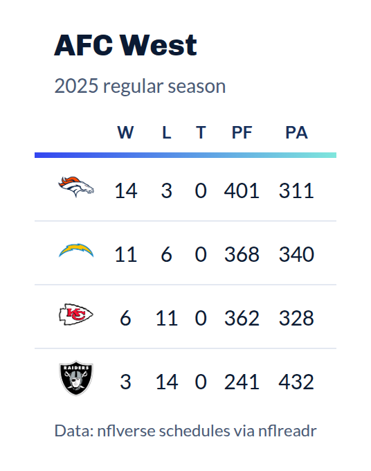

On this page
A table built for a browser and a table built for a feed are not the
same object. gt::gtsave() writes what the browser rendered,
margins included, at whatever size the page happened to be. Posting
wants a trimmed image, a predictable width across a set, and often a
specific shape.
This article covers the export side of the package on one real table,
the NFL’s most efficient passers of 2025, and one batch, a standings
image for each AFC division: gt_save_crop(),
gt_social_crop(), gt_save_batch(), the
"social" density on every theme, and the two attribution
functions, gt_watermark() and gt_social_tag().
The data is nflverse’s, read with nflreadr. These
functions come from Andrew Weatherman’s gtUtils, and this
article follows his saving guide.
Saving drives a headless Chrome through webshot2. Each
save below is shown as code, and the picture under it is the image that
code writes, made when this page was built.
The table
The ten quarterbacks with the most EPA per dropback (pass attempts plus sacks) among those with at least 300 dropbacks in the 2025 regular season, with NFL.com headshots and team logos.
qbs <- nflreadr::load_player_stats(2025, summary_level = "reg") |>
filter(position == "QB") |>
mutate(dropbacks = attempts + sacks_suffered, epa_db = passing_epa / dropbacks) |>
filter(dropbacks >= 300) |>
arrange(desc(epa_db), player_id) |>
slice_head(n = 10) |>
mutate(rank = row_number()) |>
select(rank, player_id, player_display_name, recent_team, dropbacks, epa_db, passing_cpoe)
passers <- function(df) {
gt(df) |>
gt_sdv_headshots(player_id, sport = "nfl", height = 34) |>
gt_sdv_logos(recent_team, sport = "nfl", height = 24) |>
fmt_number(epa_db, decimals = 2, force_sign = TRUE) |>
fmt_number(passing_cpoe, decimals = 1, force_sign = TRUE) |>
cols_label(
rank = "", player_id = "", player_display_name = "Quarterback", recent_team = "",
dropbacks = "Dropbacks", epa_db = "EPA/db", passing_cpoe = "CPOE"
) |>
cols_align(columns = -player_display_name, "center") |>
tab_header("The NFL's most efficient passers, 2025", "EPA per dropback, regular season, 300 or more dropbacks") |>
tab_source_note("Data: nflverse player stats via nflreadr")
}
tbl <- gt_theme_sdv(passers(qbs))
tbl| The NFL's most efficient passers, 2025 | ||||||
| EPA per dropback, regular season, 300 or more dropbacks | ||||||
| Quarterback | Dropbacks | EPA/db | CPOE | |||
|---|---|---|---|---|---|---|
| 1 |  |
Drake Maye |  |
539 | +0.31 | +10.8 |
| 2 |  |
Matthew Stafford |  |
620 | +0.24 | +1.5 |
| 3 |  |
Jordan Love |  |
460 | +0.24 | +5.5 |
| 4 |  |
Dak Prescott |  |
631 | +0.18 | +2.2 |
| 5 |  |
Jared Goff |  |
616 | +0.17 | +1.8 |
| 6 |  |
Daniel Jones |  |
406 | +0.16 | +2.3 |
| 7 |  |
Sam Darnold |  |
504 | +0.15 | +5.2 |
| 8 |  |
Mac Jones |  |
305 | +0.15 | +3.7 |
| 9 |  |
Josh Allen |  |
500 | +0.14 | +3.5 |
| 10 |  |
Patrick Mahomes |  |
536 | +0.13 | +0.3 |
| Data: nflverse player stats via nflreadr | ||||||
passers() builds the table without a theme, so each
section below can dress the same rows its own way.
1. Trimming and padding
gt_save_crop() renders the table, trims the whitespace
around it, then pads it back by a fixed amount so the image has an even
margin on all four sides. whitespace sets that margin in
pixels and bg its color, which should match the theme’s
background: theme_bg records the background every theme
paints.
bg <- theme_bg$bg[theme_bg$theme == "gt_theme_sdv" & theme_bg$has_style == "light"]
tbl |> gt_save_crop(file = "passers.png", bg = bg)
zoom controls the render scale, at 2 by
default, so the output is retina-sized. width is the one to
know about for a series: passing it scales the finished image to an
exact pixel width, holding the aspect ratio, so every image in a set
lines up.
tbl |> gt_save_crop(file = "passers.png", bg = bg, width = 1080)Leave file unset and the image is returned rather than
written, which is useful when you want to keep working on it with
magick.
2. Sizing type for an image
Type sized for a browser reads small once the image is scaled into a
feed. Every theme in the package takes a density argument,
and "social" is the setting built for this (larger body
type, roomier rows, and a larger title).
qbs |>
slice_head(n = 5) |>
passers() |>
gt_theme_sdv(density = "social")| The NFL's most efficient passers, 2025 | ||||||
| EPA per dropback, regular season, 300 or more dropbacks | ||||||
| Quarterback | Dropbacks | EPA/db | CPOE | |||
|---|---|---|---|---|---|---|
| 1 | |
Drake Maye | |
539 | +0.31 | +10.8 |
| 2 | |
Matthew Stafford | |
620 | +0.24 | +1.5 |
| 3 | |
Jordan Love | |
460 | +0.24 | +5.5 |
| 4 | |
Dak Prescott | |
631 | +0.18 | +2.2 |
| 5 | |
Jared Goff | |
616 | +0.17 | +1.8 |
| Data: nflverse player stats via nflreadr | ||||||
3. A fixed canvas
Some destinations want a shape rather than a size.
gt_social_crop() centers the table on a canvas of a target
aspect ratio. Here the top five, at social density, go on a 4:5 portrait
canvas.
qbs |>
slice_head(n = 5) |>
passers() |>
gt_theme_sdv(density = "social") |>
gt_social_crop(aspect_ratio = "4:5", bg = bg, file = "passers-4x5.png")
aspect_ratio reads "1:1",
"16:9", "4x5", or a bare number like
1.91. The canvas always grows to fit: it keeps the table’s
size and widens or lengthens the canvas around it, so the table is never
cropped to make the ratio. gravity moves the table on the
canvas if you do not want it centered.
4. Attribution
gt_watermark() puts a faint wordmark behind the table
body, and gt_social_tag() puts handles and icons in the
source note.
qbs |>
passers() |>
gt_theme_broadsheet() |>
gt_watermark(
text = "sdvplotR", opacity = 0.06, size = "62%", angle = 20,
font = "Helvetica"
) |>
gt_social_tag(c(x = "@SportsDataverse", gh = "sportsdataverse"),
caption = "Built with sdvplotR"
) |>
gt_save_crop(file = "passers-branded.png", bg = "#FBFAF7")
Two things about the watermark.
It is drawn as an SVG background image, because that is the only way
to sit behind the body without taking up a row. An SVG background cannot
load the page’s webfonts, so font has to name a face
installed on the machine doing the rendering. "Helvetica"
and "Arial" are safe. A Google font named there will
silently fall back.
It also sits behind the body cells, so it disappears under any cell
that has its own fill. On a striped theme, or after
gt_color_ranks(), you will only see it in the gaps. Themes
without fills, like gt_theme_broadsheet() or
gt_theme_swiss(), show it cleanly.
gt_social_tag() takes a named vector where the names
pick the icon. It knows the common aliases (x,
bsky, ig, gh, yt,
web, email among others) and falls back to any
Font Awesome icon name. stack = TRUE puts one account per
line for a narrow table.
5. One image per group
gt_save_batch() splits the data, builds a table for each
group with a function you supply, and writes one image per group. The
groups here are the four AFC divisions: each team’s 2025 regular-season
record from the schedule, its division from
team_reference().
nfl_teams <- team_reference("nfl")
records <- nflreadr::load_schedules(2025) |>
filter(game_type == "REG", !is.na(home_score)) |>
select(home_team, away_team, home_score, away_score) |>
nflreadr::clean_homeaway() |>
summarise(
w = sum(team_score > opponent_score),
l = sum(team_score < opponent_score),
t = sum(team_score == opponent_score),
pf = sum(team_score),
pa = sum(opponent_score),
.by = team
) |>
mutate(division = nfl_teams$division[match(team, nfl_teams$team_abbr)]) |>
filter(startsWith(division, "AFC")) |>
arrange(division, desc(w + t / 2), team)
division_table <- function(df, division) {
df |>
select(team, w, l, t, pf, pa) |>
gt() |>
gt_sdv_logos(team, sport = "nfl", height = 28) |>
cols_label(team = "", w = "W", l = "L", t = "T", pf = "PF", pa = "PA") |>
cols_align(columns = everything(), "center") |>
tab_header(division, "2025 regular season") |>
tab_source_note("Data: nflverse schedules via nflreadr") |>
gt_theme_sdv()
}division_table() receives one group’s rows and the
group’s value, and returns a gt_tbl; anything else raises
an error naming what came back instead. Teams are ordered by record with
the abbreviation as a tiebreaker, not by the NFL’s tiebreaking rules, so
the table shows no rank.
gt_save_batch(
records,
group = division,
fn = division_table,
file = "{group}.png",
dir = "afc"
)



file is a pattern rather than a path.
{group} is replaced by each group’s value, made safe for a
file name, so this writes one image per division. The directory is
created if it does not exist.
match_width is on by default and is the reason to use
this over a loop: every image is padded out to the width of the widest,
so a set posted side by side lines up. Set
match_width = FALSE to keep each image at its natural
width, and quiet = TRUE to suppress the per-group progress
messages.